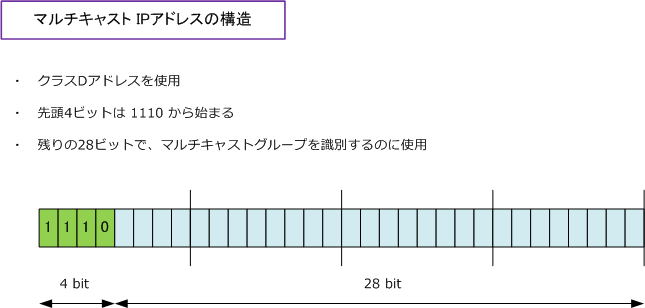

Multicast IP Address
マルチキャストアドレス
特定のグループを指定するアドレス、つまりマルチキャストアドレスについて詳細に解説していきます。 マルチキャストアドレスではクラスDアドレス（224.0.0.0 ～ 239.255.255.255）を使用します。この マルチキャストアドレスは宛先アドレスとしてのみ使用され、送信元アドレスはユニキャストアドレスを 使用します。なお、マルチキャストトラフィックはUDPを使用するので、マルチキャストトラフィックの 信頼性を確保したい場合、それはアプリケーションやQoSで管理する必要があります。
マルチキャストIPアドレスの構造
マルチキャストのIPアドレスは、32ビットのうち第1オクテットのトップビット「1110」を使用しますが、 残りの28ビットはクラスA ～ C のように階層構造となっておらず、残りはマルチキャストのグループIDを 識別するのに使用されます。マルチキャストのグループIDとは「受信するホストのグループ」のことです。

マルチキャストIPアドレスの管理
マルチキャストアドレスは、マルチキャストパケットを送信するスコープ（範囲）により3つに分類されます。
| 種類 | アドレス範囲 | 説明 |
|---|---|---|
| リンクローカル | 224.0.0.0 ～ 224.0.0.255 | 同一セグメント上で使用するアドレス。この範囲のアドレスは 通常、TTL値「1」で送信されるため、ルータで転送されない。 |
| グローバルスコープ | 224.0.1.0 ～ 238.255.255.255 | 企業が、組織間やインターネットで使用するためのアドレス。 アプリケーションは、アドレスの一部をICANNで予約して使用。 |
| プライベートスコープ | 239.0.0.0 ～ 239.255.255.255 | 企業が、組織内で使用するためのアドレス。 「239.0.0.0/24」と「239.128.0.0/24」は使用しない事が推奨。 |
マルチキャストIPアドレスの管理 - 予約済みリンクローカルアドレス
マルチキャストのアドレスの割り当ては ICANN により管理されています。マルチキャストアドレスは、動的 または静的に割り当てることが可能です。動的なマルチキャストの割り当ては、マルチメディアのアプリケー ションがオンデマンドで割り当てます。静的に割り当てられた「Well-Knownアドレス」には以下があります。
| マルチキャストアドレス | 対象 |
|---|---|
| 224.0.0.1 | サブネット上の全てのマルチキャスト対応のホスト |
| 224.0.0.2 | サブネット上の全てのマルチキャスト対応のルータ |
| 224.0.0.5 | 全てのOSPFルータ |
| 224.0.0.6 | 全てのOSPF DR/BDRルータ |
| 224.0.0.9 | 全てのRIPv2ルータ |
| 224.0.0.10 | 全てのEIGRPルータ |
| 224.0.0.13 | 全てのPIMルータ |
| 224.0.0.18 | 全てのVRRPルータ |